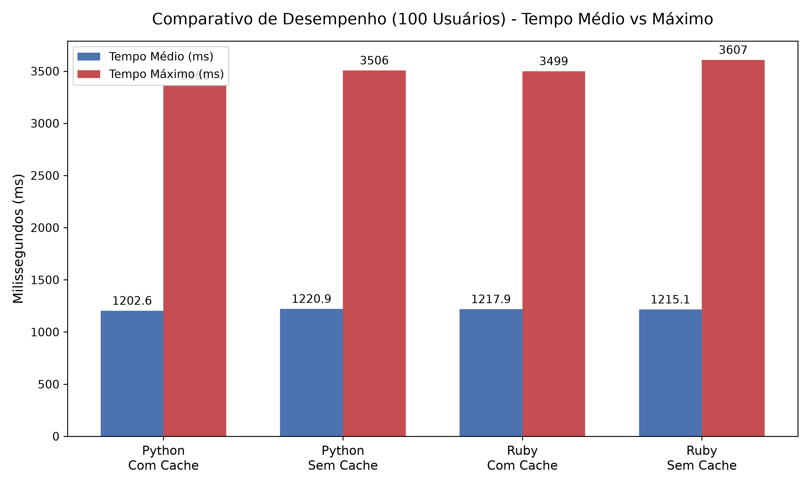

Computação Distribuída
Alípio Rollo Júnior (2320422/3)
Ciência da Computação
O sistema rodou frio (cold start).
O tráfego aumentou e as filas começaram a estabilizar.

Enquanto as médias (barras azuis) são similares, a ausência de cache elevou drasticamente
os tempos máximos de resposta (barras vermelhas) batendo picos de 3607 ms (Ruby).